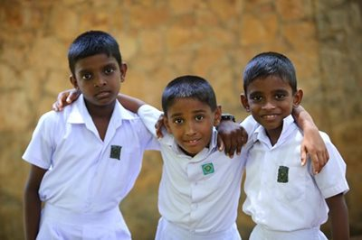
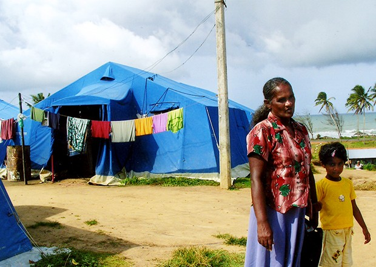

DONATE
Help A Child In Need

SOS Children’s Villages Sri Lanka is an approved charitable organization under the section 31 (09) (a) of the Inland Revenue Act No. 28 of 1979 Sri Lanka.
Your donation helps
orphaned and abandoned children
Your donation will be used to provide a loving home, education and quality care.
We will send regular communication to you on our work.
Sri Lanka Red Cross Society

After assisting the people of Sri Lanka who were battered by the 2004 tsunami, we have now embarked upon a new quest to help the people who were victims of the 30 year old conflict. Our aim is to help them to rebuild their lives and livelihood and to strengthen them to be a strong contributor to the Sri Lankan economy. One of the best ways you can make a different in the lives of these people is to make a financial donation to our work.
You may make a donation by clicking on
this link.
You may also choose to donate to one of our other core programmes, or to make a general “un-earmarked” donation. These donations essential to enable us to help people in desperate need, but for whom it can be difficult to raise funds as their plight is no longer in the news.
The Sri Lanka Red Cross Society is not a government agency, but depends on donations to carry out its work. What’s more, the value of contributions is increased by the fact that the Society has a huge volunteer network, with 355 volunteers for every paid member of staff.